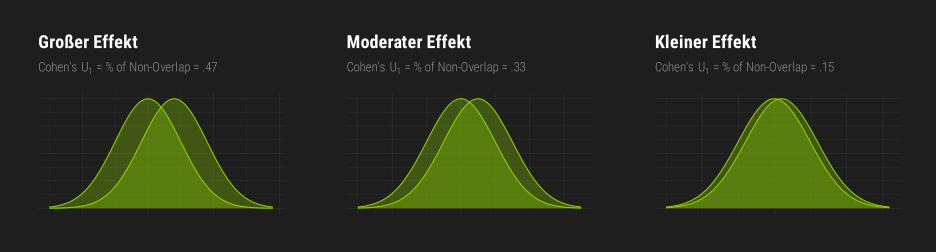
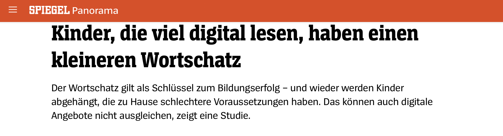
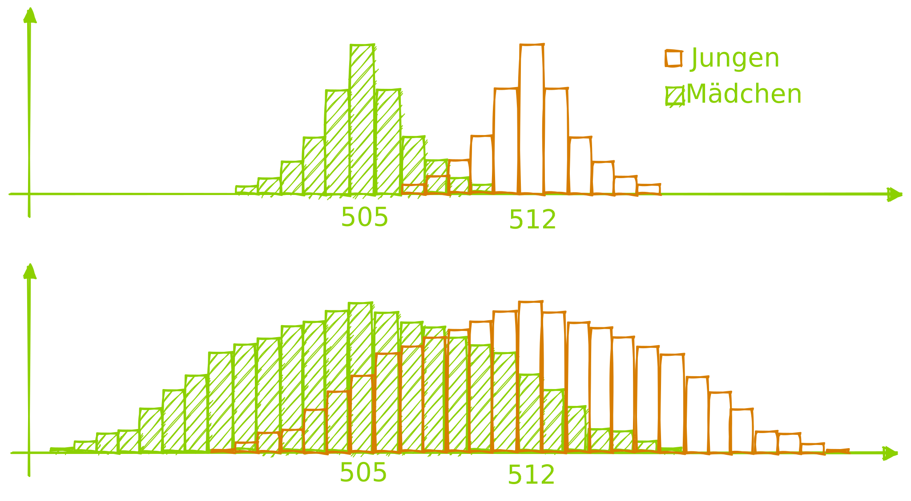
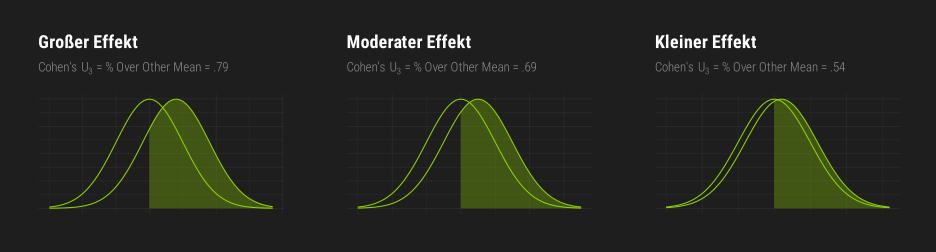
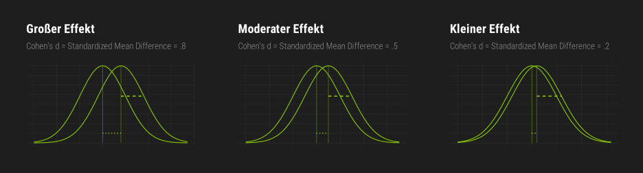
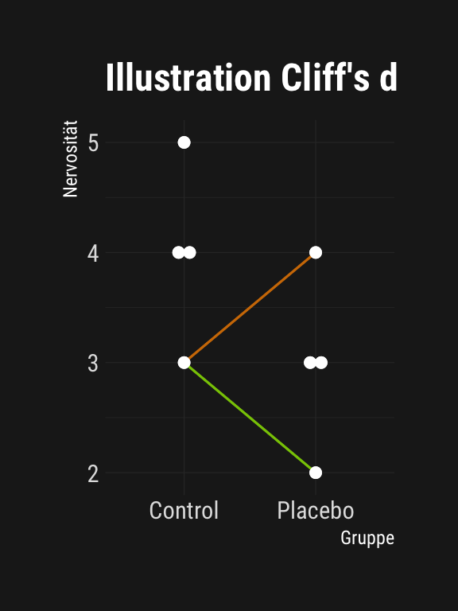
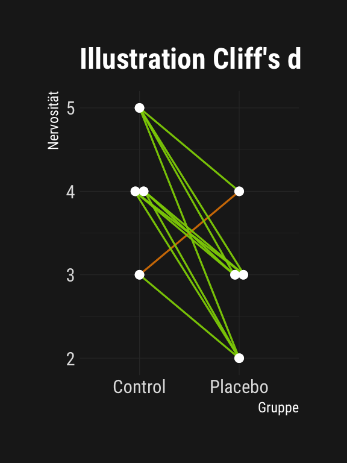
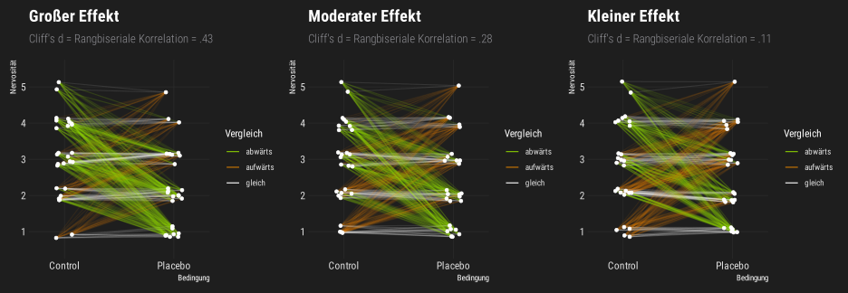

Effektstärken
für Gruppenmittelwertsunterschiede
Samuel Merk
Inhalte dieses Vorlesungsblocks
Informationsgehalt von Effektstärken
Effektstärken für zwei normalverteilte Variablen (Cohen’s \(U_1\), \(U_3\) und \(d\))
Effektstärken für zwei nicht-normalverteilte (z.B. ordinale) Variablen (Cliff’s \(d\))
Informationsgehalt von Effektstärken
Informationsgehalt von Effektstärken


Informationsgehalt von Effektstärken

Überlappung vs. Mittelwertsdifferenz
Aufgaben: Mittelwertsdifferenzen
Bearbeiten Sie mehrere Versionen der Aufgabe 4.1 unter ogy.de/mvl
Effektstärken für zwei normalverteilte Variablen
Cohen’s U₁ (% of Non-Overlap)
- \(U_1 =\) Nicht-Überlappung der Häufigkeitsverteilungen
- Voraussetzung: Zwei normalverteile (daher auch intervallskalierte) Variablen
- \(U_1\) nimmt Werte zwischen 0 (Nulleffekt) und 1 (maximaler Effekt) an
- Cohen’s (1988) Benchmarks für kleine, mittlere und große Effekte liegen bei \(U_1=.15\), \(U_1=.33\) und \(U_1=.47\)
Cohen’s U₃ (% Over Other Mean)

- \(U_3 =\) % über dem Mittelwert der anderen Gruppe
- Voraussetzung: Zwei normalverteile (daher auch intervallskalierte) Variablen
- \(U_3\) nimmt Werte zwischen 0 (maximale Unterlegenheit) und 1 (maximale Überlegenheit) an; ein Nulleffekt liegt bei \(U_3 = 0.5\) vor
- Cohen’s Benchmarks für kleine, mittlere und große Effekte liegen bei \(U_3=.58\), \(U_3=.69\) und \(U_3=.79\)
Cohen’s \(d\) (Standardized Mean Difference)

- \(d(XY) = \frac{\bar{x}-\bar{y}}{\sqrt{\frac{s_x^2 + s_y^2}{2}}}\) (Interaktive Visualisierung )
- Cohen’s \(d\) kann Werte zwischen \(-\infty\) und \(+\infty\) annehmen. Je weiter \(d\) von 0 entfernt ist, desto stärker ist der Effekt; \(d = 0\) entspricht dem Nulleffekt
- Cohen’s Benchmarks für kleine, mittlere und große Effekte liegen bei \(d=.2\), \(d=.5\) und \(d=.8\)
Visual Guessing U₁, U₃, & Cohen’s d
Bearbeiten Sie mehrere Versionen der Aufgaben 4.2 - 4.4 unter ogy.de/mvl
Effektstärken für zwei nicht-normalverteilte (z.B. ordinale) Variablen
Cliff’s \(d\) (Rangbiseriale Korrelation)
Die Grundidee von Cliff’s d ist, jeden Punkt einer Gruppe \(x_i\) mit jedem Punkt der anderen Gruppe \(y_i\) zu vergleichen und zu entscheiden, ob \(\color{#d77d00}{x_i < y_i}\), \(x_i = y_i\) oder \(\color{#8cd000}{x_i > y_i}\) gilt.

Cliff’s \(d\) (Rangbiseriale Korrelation)
\[\text{Cliff's } d = \frac{\#\text{Abwärtsvergl.} - \#\text{Aufwärtsvergl.}}{\#\text{Alle Vergl.}}\]
\[= \frac{\color{#8cd000}{\#(x_i > y_i)} - \color{#d77d00}{\#(x_i < y_i)}}{\#X \cdot \#Y}\]
\[= \frac{\color{#8cd000}{11} - \color{#d77d00}{1}}{16}\] \[= .625\]

Benchmarks Cliff’s d

- Voraussetzung: Zwei mindestens ordinalverteile Variablen
- Cliff’s \(d(X, Y)\) nimmt Werte zwischen -1 (maximale Unterlegenheit von X) und 1 (maximale Überlegenheit von X) an; ein Nulleffekt liegt bei \(d = 0\) vor
- Cohen’s Benchmarks für kleine, mittlere und große Effekte liegen bei \(d=.11\), \(d=.28\) und \(d=.43\)
Benchmarks Übersicht
| Effektstärke | klein | moderat | groß |
|---|---|---|---|
| U₁ | 0.14 | 0.33 | 0.47 |
| U₃ | 0.58 | 0.69 | 0.78 |
| Cohen’s d | 0.20 | 0.50 | 0.80 |
| Cliff’s d | 0.11 | 0.28 | 0.43 |
Visual Guessing Cliff’s d
Bearbeiten Sie mehrere Versionen der Aufgaben 4.5 unter ogy.de/mvl
Vergleich der Effektstärken
Bearbeiten Sie mehrere Versionen der Aufgaben 4.6 unter ogy.de/mvl
Literatur
Cohen, J. (1988). Statistical power analysis for the behavioral sciences (Second). New Jersey: Lawrence Erlbaum.
Grundschul-Studie: Kinder, die viel digital lesen, haben einen kleineren Wortschatz. (2022). Der Spiegel.
Pisa-Studie: Deutsche Mädchen schwächeln beim Problemlösen - WELT. (2015, September). DIE WELT. https://www.welt.de/wirtschaft/article126429005/Deutsche-Maedchen-schwaecheln-beim-Problemloesen.html.
Pisa-Studie: Schüler mit Migrationshintergrund sind schwächer. (2018). FAZ.NET.
Psychologie-lernen .de. (2023, March). Diese Pille hilft gegen Angst und bringt bessere Noten! (obwohl sie nicht existiert...).